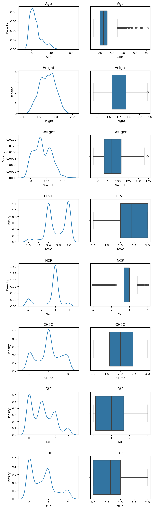
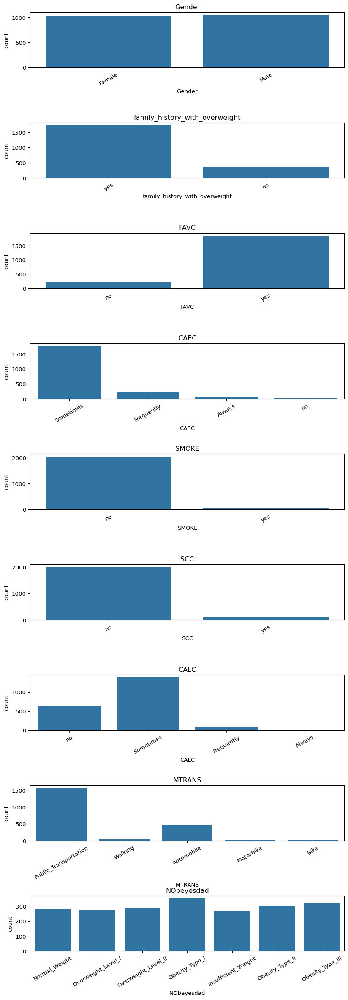

Haz clic para ver el código
# Importar librerías
import pandas as pd
import matplotlib.pyplot as plt
import seaborn as sns
import numpy as npClasificar si una persona tiene obesidad según sus hábitos alimenticios y nivel de actividad física.
Los datos consisten en la estimación de los niveles de obesidad en personas de los países de México, Perú y Colombia, con edades entre 14 y 61 años, y con diversos hábitos alimenticios y condiciones físicas. Los datos fueron recolectados mediante una plataforma web con una encuesta en la que usuarios anónimos respondieron cada pregunta. Luego, la información fue procesada, obteniendo 17 atributos y 2111 registros.
Los atributos relacionados con los hábitos alimenticios son:
Los atributos relacionados con la condición física son: - Monitoreo del consumo de calorías (SCC). - Frecuencia de actividad física (FAF). - Tiempo de uso de dispositivos tecnológicos (TUE). - Medio de transporte utilizado (MTRANS).
Variables obtenidas: - Género. - Edad. - Estatura. - Peso.
Los valores de NObesity son: - Bajo peso: Menos de 18.5 - Normal: 18.5 a 24.9 - Sobrepeso: 25.0 a 29.9 - Obesidad I: 30.0 a 34.9 - Obesidad II: 35.0 a 39.9 - Obesidad III: Mayor a 40
# Importar librerías
import pandas as pd
import matplotlib.pyplot as plt
import seaborn as sns
import numpy as np# Lectura
ruta = '../1_data/ObesityDataSet.csv'
data = pd.read_csv(ruta)print(data.shape)
data.head()(2111, 17)| Gender | Age | Height | Weight | family_history_with_overweight | FAVC | FCVC | NCP | CAEC | SMOKE | CH2O | SCC | FAF | TUE | CALC | MTRANS | NObeyesdad | |
|---|---|---|---|---|---|---|---|---|---|---|---|---|---|---|---|---|---|
| 0 | Female | 21.0 | 1.62 | 64.0 | yes | no | 2.0 | 3.0 | Sometimes | no | 2.0 | no | 0.0 | 1.0 | no | Public_Transportation | Normal_Weight |
| 1 | Female | 21.0 | 1.52 | 56.0 | yes | no | 3.0 | 3.0 | Sometimes | yes | 3.0 | yes | 3.0 | 0.0 | Sometimes | Public_Transportation | Normal_Weight |
| 2 | Male | 23.0 | 1.80 | 77.0 | yes | no | 2.0 | 3.0 | Sometimes | no | 2.0 | no | 2.0 | 1.0 | Frequently | Public_Transportation | Normal_Weight |
| 3 | Male | 27.0 | 1.80 | 87.0 | no | no | 3.0 | 3.0 | Sometimes | no | 2.0 | no | 2.0 | 0.0 | Frequently | Walking | Overweight_Level_I |
| 4 | Male | 22.0 | 1.78 | 89.8 | no | no | 2.0 | 1.0 | Sometimes | no | 2.0 | no | 0.0 | 0.0 | Sometimes | Public_Transportation | Overweight_Level_II |
# Veamos las variables categóricas y las numéricas
data.info()<class 'pandas.core.frame.DataFrame'>
RangeIndex: 2111 entries, 0 to 2110
Data columns (total 17 columns):
# Column Non-Null Count Dtype
--- ------ -------------- -----
0 Gender 2111 non-null object
1 Age 2111 non-null float64
2 Height 2111 non-null float64
3 Weight 2111 non-null float64
4 family_history_with_overweight 2111 non-null object
5 FAVC 2111 non-null object
6 FCVC 2111 non-null float64
7 NCP 2111 non-null float64
8 CAEC 2111 non-null object
9 SMOKE 2111 non-null object
10 CH2O 2111 non-null float64
11 SCC 2111 non-null object
12 FAF 2111 non-null float64
13 TUE 2111 non-null float64
14 CALC 2111 non-null object
15 MTRANS 2111 non-null object
16 NObeyesdad 2111 non-null object
dtypes: float64(8), object(9)
memory usage: 280.5+ KBRealizaremos el proceso de limpieza teniendo en cuenta las situaciones más comunes:
Al final de este proceso de limpieza deberíamos tener un set de datos íntegro, listo para la fase de Análisis Exploratorio.
De acuerdo a la información previa, no tenemos datos faltantes.
data.isnull().sum()Gender 0
Age 0
Height 0
Weight 0
family_history_with_overweight 0
FAVC 0
FCVC 0
NCP 0
CAEC 0
SMOKE 0
CH2O 0
SCC 0
FAF 0
TUE 0
CALC 0
MTRANS 0
NObeyesdad 0
dtype: int64Una columna irrelevante puede ser:
Si tenemos la duda de si alguna columna puede ser relevante o no lo mejor es dejarla (y más adelante en posteriores etapas podremos darnos cuenta de si se debe preservar o no).
En este caso todas las columnas pueden resultar relevantes, pero debemos verificar que no haya columnas categóricas con un sólo nivel, o columnas numéricas con un sólo valor:
data.dtypesGender object
Age float64
Height float64
Weight float64
family_history_with_overweight object
FAVC object
FCVC float64
NCP float64
CAEC object
SMOKE object
CH2O float64
SCC object
FAF float64
TUE float64
CALC object
MTRANS object
NObeyesdad object
dtype: object# Conteo de los niveles en las diferentes columnas categóricas
cols_cat = ['Gender', 'family_history_with_overweight', 'FAVC', 'CAEC',
'SMOKE', 'SCC', 'CALC', 'MTRANS', 'NObeyesdad']
# cols_cat = data.select_dtypes(include=['object']).columns
# print(f'Columna {col}: {data[col].nunique()} subniveles')
for col in cols_cat:
print(f'{col}: {data[col].unique()}')
data[cols_cat].nunique() # otra forma mas sencillaGender: ['Female' 'Male']
family_history_with_overweight: ['yes' 'no']
FAVC: ['no' 'yes']
CAEC: ['Sometimes' 'Frequently' 'Always' 'no']
SMOKE: ['no' 'yes']
SCC: ['no' 'yes']
CALC: ['no' 'Sometimes' 'Frequently' 'Always']
MTRANS: ['Public_Transportation' 'Walking' 'Automobile' 'Motorbike' 'Bike']
NObeyesdad: ['Normal_Weight' 'Overweight_Level_I' 'Overweight_Level_II'
'Obesity_Type_I' 'Insufficient_Weight' 'Obesity_Type_II'
'Obesity_Type_III']Gender 2
family_history_with_overweight 2
FAVC 2
CAEC 4
SMOKE 2
SCC 2
CALC 4
MTRANS 5
NObeyesdad 7
dtype: int64Todas las columnas categóricas tienen más de 1 subnivel. No eliminaremos ninguna.
Verifiquemos lo que ocurre con las columnas numéricas:
data.describe()| Age | Height | Weight | FCVC | NCP | CH2O | FAF | TUE | |
|---|---|---|---|---|---|---|---|---|
| count | 2111.000000 | 2111.000000 | 2111.000000 | 2111.000000 | 2111.000000 | 2111.000000 | 2111.000000 | 2111.000000 |
| mean | 24.312600 | 1.701677 | 86.586058 | 2.419043 | 2.685628 | 2.008011 | 1.010298 | 0.657866 |
| std | 6.345968 | 0.093305 | 26.191172 | 0.533927 | 0.778039 | 0.612953 | 0.850592 | 0.608927 |
| min | 14.000000 | 1.450000 | 39.000000 | 1.000000 | 1.000000 | 1.000000 | 0.000000 | 0.000000 |
| 25% | 19.947192 | 1.630000 | 65.473343 | 2.000000 | 2.658738 | 1.584812 | 0.124505 | 0.000000 |
| 50% | 22.777890 | 1.700499 | 83.000000 | 2.385502 | 3.000000 | 2.000000 | 1.000000 | 0.625350 |
| 75% | 26.000000 | 1.768464 | 107.430682 | 3.000000 | 3.000000 | 2.477420 | 1.666678 | 1.000000 |
| max | 61.000000 | 1.980000 | 173.000000 | 3.000000 | 4.000000 | 3.000000 | 3.000000 | 2.000000 |
Todas las columnas numéricas tienen desviaciones estándar (“std”) diferentes de cero, lo que indica que no tienen un único valor.
Preservaremos todas las columnas numéricas.
print(f'Tamaño del set antes de eliminar las filas repetidas: {data.shape}')
data.drop_duplicates(inplace=True)
print(f'Tamaño del set después de eliminar las filas repetidas: {data.shape}')
data = data.reset_index(drop=True)Tamaño del set antes de eliminar las filas repetidas: (2111, 17)
Tamaño del set después de eliminar las filas repetidas: (2087, 17)No siempre se deben eliminar los outliers porque dependiendo de la variable numérica analizada estos pueden contener información importante.
Creemos gráficas tipo “boxplot” de las columnas numéricas:
data.info()<class 'pandas.core.frame.DataFrame'>
RangeIndex: 2087 entries, 0 to 2086
Data columns (total 17 columns):
# Column Non-Null Count Dtype
--- ------ -------------- -----
0 Gender 2087 non-null object
1 Age 2087 non-null float64
2 Height 2087 non-null float64
3 Weight 2087 non-null float64
4 family_history_with_overweight 2087 non-null object
5 FAVC 2087 non-null object
6 FCVC 2087 non-null float64
7 NCP 2087 non-null float64
8 CAEC 2087 non-null object
9 SMOKE 2087 non-null object
10 CH2O 2087 non-null float64
11 SCC 2087 non-null object
12 FAF 2087 non-null float64
13 TUE 2087 non-null float64
14 CALC 2087 non-null object
15 MTRANS 2087 non-null object
16 NObeyesdad 2087 non-null object
dtypes: float64(8), object(9)
memory usage: 277.3+ KB# Genera gráficas individuales de las variables numéricas debido
# a que están en rangos diferentes.
cols_num = ['Age', 'Height', 'Weight', 'FCVC', 'NCP',
'CH2O', 'FAF', 'TUE']
cols_num = data.select_dtypes(exclude=['object']).columns # Selecciona las columnas no object
fig, ax = plt.subplots(nrows=8, ncols=2, figsize=(8,30))
fig.subplots_adjust(hspace=0.5)
for i, col in enumerate(cols_num):
sns.boxplot(x=col, data=data, ax=ax[i, 1])
ax[i, 1].set_title(col)
sns.kdeplot(x=col, data=data, ax=ax[i, 0])
ax[i, 0].set_title(col)
Observaciones: - No se ven datos que puedan ser eliminados de las columnas numéricas.
En una variable categórica pueden aparecer sub-niveles como “unknown” y “UNK” que para nosotros son equivalentes pero que para nuestro programa parecerían diferentes.
Se deben unificar estos sub-niveles
# Graficar los niveles de cada variable categórica
cols_cat = ['Gender', 'family_history_with_overweight', 'FAVC', 'CAEC',
'SMOKE', 'SCC', 'CALC', 'MTRANS', 'NObeyesdad']
fig, ax = plt.subplots(nrows=9, ncols=1, figsize=(10,30))
fig.subplots_adjust(hspace=1)
for i, col in enumerate(cols_cat):
sns.countplot(x=col, data=data, ax=ax[i])
ax[i].set_title(col)
ax[i].set_xticklabels(ax[i].get_xticklabels(), rotation=30)/var/folders/q7/h46b93yn785_qrccjg33gkqw0000gn/T/ipykernel_10012/3361737788.py:11: UserWarning: set_ticklabels() should only be used with a fixed number of ticks, i.e. after set_ticks() or using a FixedLocator.
ax[i].set_xticklabels(ax[i].get_xticklabels(), rotation=30)
/var/folders/q7/h46b93yn785_qrccjg33gkqw0000gn/T/ipykernel_10012/3361737788.py:11: UserWarning: set_ticklabels() should only be used with a fixed number of ticks, i.e. after set_ticks() or using a FixedLocator.
ax[i].set_xticklabels(ax[i].get_xticklabels(), rotation=30)
/var/folders/q7/h46b93yn785_qrccjg33gkqw0000gn/T/ipykernel_10012/3361737788.py:11: UserWarning: set_ticklabels() should only be used with a fixed number of ticks, i.e. after set_ticks() or using a FixedLocator.
ax[i].set_xticklabels(ax[i].get_xticklabels(), rotation=30)
/var/folders/q7/h46b93yn785_qrccjg33gkqw0000gn/T/ipykernel_10012/3361737788.py:11: UserWarning: set_ticklabels() should only be used with a fixed number of ticks, i.e. after set_ticks() or using a FixedLocator.
ax[i].set_xticklabels(ax[i].get_xticklabels(), rotation=30)
/var/folders/q7/h46b93yn785_qrccjg33gkqw0000gn/T/ipykernel_10012/3361737788.py:11: UserWarning: set_ticklabels() should only be used with a fixed number of ticks, i.e. after set_ticks() or using a FixedLocator.
ax[i].set_xticklabels(ax[i].get_xticklabels(), rotation=30)
/var/folders/q7/h46b93yn785_qrccjg33gkqw0000gn/T/ipykernel_10012/3361737788.py:11: UserWarning: set_ticklabels() should only be used with a fixed number of ticks, i.e. after set_ticks() or using a FixedLocator.
ax[i].set_xticklabels(ax[i].get_xticklabels(), rotation=30)
/var/folders/q7/h46b93yn785_qrccjg33gkqw0000gn/T/ipykernel_10012/3361737788.py:11: UserWarning: set_ticklabels() should only be used with a fixed number of ticks, i.e. after set_ticks() or using a FixedLocator.
ax[i].set_xticklabels(ax[i].get_xticklabels(), rotation=30)
/var/folders/q7/h46b93yn785_qrccjg33gkqw0000gn/T/ipykernel_10012/3361737788.py:11: UserWarning: set_ticklabels() should only be used with a fixed number of ticks, i.e. after set_ticks() or using a FixedLocator.
ax[i].set_xticklabels(ax[i].get_xticklabels(), rotation=30)
/var/folders/q7/h46b93yn785_qrccjg33gkqw0000gn/T/ipykernel_10012/3361737788.py:11: UserWarning: set_ticklabels() should only be used with a fixed number of ticks, i.e. after set_ticks() or using a FixedLocator.
ax[i].set_xticklabels(ax[i].get_xticklabels(), rotation=30)
data.shape(2087, 17)¡Y listo, ya hemos realizado la limpieza de nuestro set de datos!
Originalmente tenía 2.111 registros y 17 columnas. El dataset resultante tiene 2.087 filas (24 menos) y 17 columnas.
El set de datos ya está listo para el Análisis Exploratorio.
ruta = '../1_data/dataset_obesity_clean.csv'
data.to_csv(ruta)ruta_train = '../1_data/train.csv'
data_train = pd.read_csv(ruta_train)print(data_train.shape)
data_train.head()(20758, 18)| id | Gender | Age | Height | Weight | family_history_with_overweight | FAVC | FCVC | NCP | CAEC | SMOKE | CH2O | SCC | FAF | TUE | CALC | MTRANS | NObeyesdad | |
|---|---|---|---|---|---|---|---|---|---|---|---|---|---|---|---|---|---|---|
| 0 | 0 | Male | 24.443011 | 1.699998 | 81.669950 | yes | yes | 2.000000 | 2.983297 | Sometimes | no | 2.763573 | no | 0.000000 | 0.976473 | Sometimes | Public_Transportation | Overweight_Level_II |
| 1 | 1 | Female | 18.000000 | 1.560000 | 57.000000 | yes | yes | 2.000000 | 3.000000 | Frequently | no | 2.000000 | no | 1.000000 | 1.000000 | no | Automobile | Normal_Weight |
| 2 | 2 | Female | 18.000000 | 1.711460 | 50.165754 | yes | yes | 1.880534 | 1.411685 | Sometimes | no | 1.910378 | no | 0.866045 | 1.673584 | no | Public_Transportation | Insufficient_Weight |
| 3 | 3 | Female | 20.952737 | 1.710730 | 131.274851 | yes | yes | 3.000000 | 3.000000 | Sometimes | no | 1.674061 | no | 1.467863 | 0.780199 | Sometimes | Public_Transportation | Obesity_Type_III |
| 4 | 4 | Male | 31.641081 | 1.914186 | 93.798055 | yes | yes | 2.679664 | 1.971472 | Sometimes | no | 1.979848 | no | 1.967973 | 0.931721 | Sometimes | Public_Transportation | Overweight_Level_II |
data_train['NObeyesdad'].value_counts(normalize=True)NObeyesdad
Obesity_Type_III 0.194913
Obesity_Type_II 0.156470
Normal_Weight 0.148473
Obesity_Type_I 0.140187
Insufficient_Weight 0.121544
Overweight_Level_II 0.121495
Overweight_Level_I 0.116919
Name: proportion, dtype: float64columnas_categoricas = data_train.select_dtypes(include=['object']).columns
data_train[columnas_categoricas].nunique()Gender 2
family_history_with_overweight 2
FAVC 2
CAEC 4
SMOKE 2
SCC 2
CALC 3
MTRANS 5
NObeyesdad 7
dtype: int64ruta_test = '../1_data/test.csv'
data_test = pd.read_csv(ruta_test)print(data_test.shape)
data_test.head()(13840, 17)| id | Gender | Age | Height | Weight | family_history_with_overweight | FAVC | FCVC | NCP | CAEC | SMOKE | CH2O | SCC | FAF | TUE | CALC | MTRANS | |
|---|---|---|---|---|---|---|---|---|---|---|---|---|---|---|---|---|---|
| 0 | 20758 | Male | 26.899886 | 1.848294 | 120.644178 | yes | yes | 2.938616 | 3.000000 | Sometimes | no | 2.825629 | no | 0.855400 | 0.000000 | Sometimes | Public_Transportation |
| 1 | 20759 | Female | 21.000000 | 1.600000 | 66.000000 | yes | yes | 2.000000 | 1.000000 | Sometimes | no | 3.000000 | no | 1.000000 | 0.000000 | Sometimes | Public_Transportation |
| 2 | 20760 | Female | 26.000000 | 1.643355 | 111.600553 | yes | yes | 3.000000 | 3.000000 | Sometimes | no | 2.621877 | no | 0.000000 | 0.250502 | Sometimes | Public_Transportation |
| 3 | 20761 | Male | 20.979254 | 1.553127 | 103.669116 | yes | yes | 2.000000 | 2.977909 | Sometimes | no | 2.786417 | no | 0.094851 | 0.000000 | Sometimes | Public_Transportation |
| 4 | 20762 | Female | 26.000000 | 1.627396 | 104.835346 | yes | yes | 3.000000 | 3.000000 | Sometimes | no | 2.653531 | no | 0.000000 | 0.741069 | Sometimes | Public_Transportation |